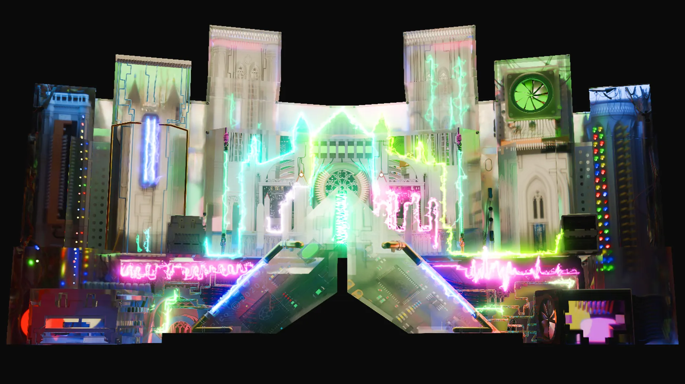
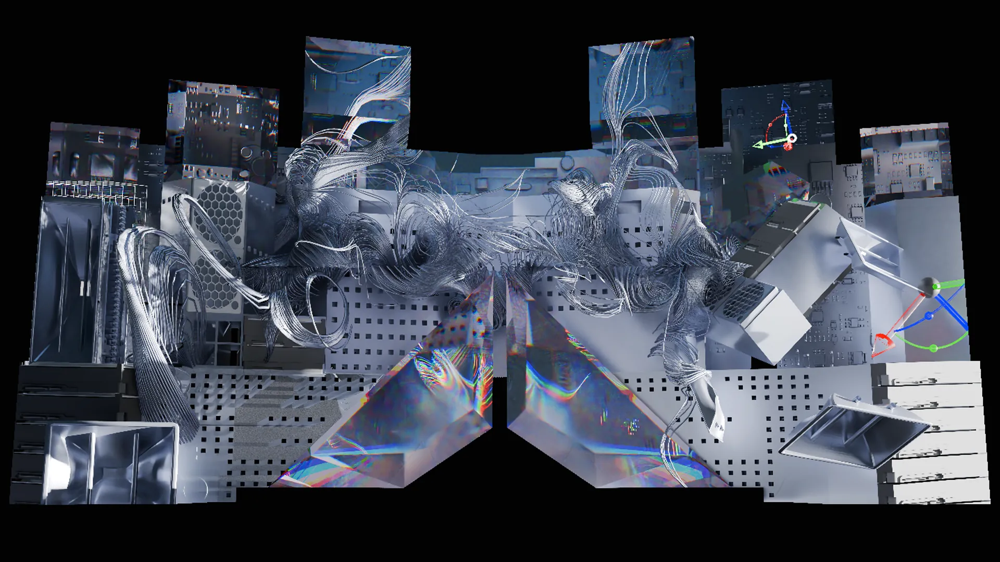
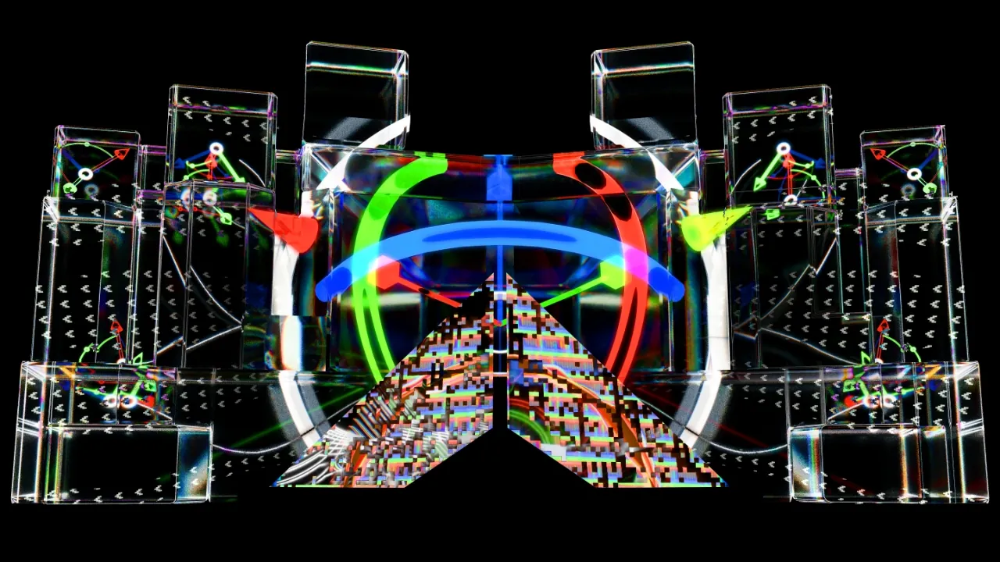
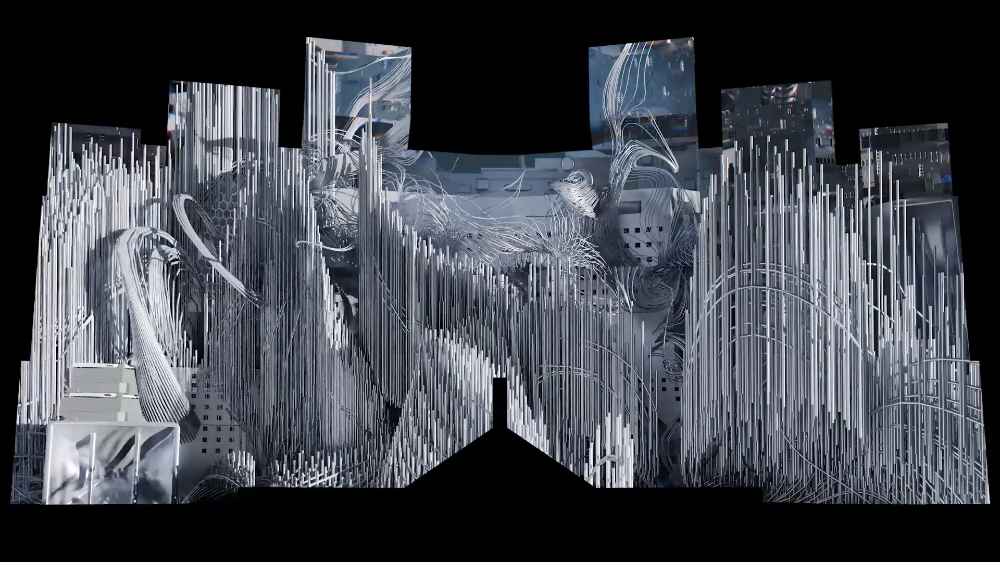

Desensitized
脱敏

一段 Mapping 影像——媒介为我们织出以讯息为食的皮肤，越敏感，也越麻木。
数字媒介使我们的存在与全人类发展密切相关，又使全人类的类态也包容在我们身上。我们必然深度参与着自己每一个行为所产生的结果，也促使我们无法再扮演所谓超然物外和脱离社会的角色。媒介已经改变接收、处理和反馈信息的方式，这必将会为全人类编织出层层以讯息为食的敏感肌肤。
A projection-mapping piece: media weave us a skin that feeds on information, growing more sensitive and more numb at once.
Digital media bind our existence closely to the development of all humankind, and in turn hold the condition of all humankind within each of us. We are inevitably deeply involved in the consequences of every action we take, and can no longer play the part of someone detached from the world and apart from society. Media have changed the way we receive, process and respond to information, and in doing so will weave for all humankind layer upon layer of sensitive skin that feeds on information.



